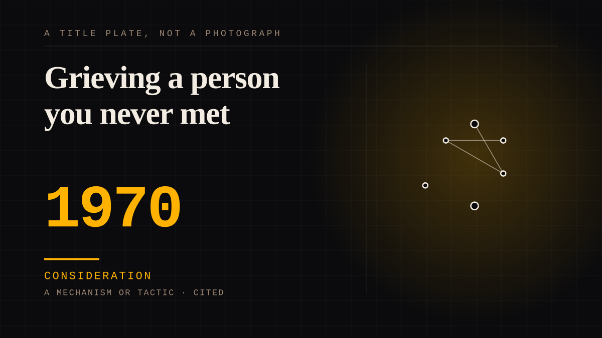

A mechanism or tactic · 1970 · Grief
Grieving a person you never met
Collective mourning of a public figure, and the persistent argument about whether it counts. Measured in studies of soap opera finales finding grief markers the same shape as the end of a relationship.

The largest and most defensible category on this site. Losing somebody is what happens when the people you love die, and a very large number of people grieve in public and are told it is a symptom. The only unusual thing about parasocial grief is that the person could not have known you were there, and that deserves care rather than condescension.
Consideration. The part where somebody stops and thinks. The research, the diagnosis, the ethics, the lawsuits, the regulators. Roughly fifty years of arguing with itself about whether this is a relationship.
Application. One-sided attachment put to work on purpose. Creator economies, community, fandom as infrastructure, and the things that genuinely help people. Not automatically good - a tool with an obvious use is a tool that will also get a bad one.
Same story, 2 other entries
Grief as a product surface2020 → The dead celebrity, generated2024
Where it sits
1950 1950-1999 · 1970 1999
Provenance · 7 source record(s)
- retrievableParasocial grief is real, measurable, and specifically disenfranchised: a death the world does not recognise as a lossDeGroot, J. M., & Leith, A. P. (2018). R.I.P. Kutner: Parasocial Grief Following the Death of a Television Character. Journalism & Mass Communication Quarterly, 77(3), 199-216. ↗
- retrievableGrief at the end of a long series, measured at scale (n=1289) after the Neighbours finaleGerace, A. (2024). When TV neighbours become good friends: Understanding Neighbours fans' feelings of grief and loss at the end of the series. PLOS ONE. ↗
- unverifiedCharacter death and series cancellation produce similar distress; voluntary withdrawal produces much lessCuddy, L., & Ellithorpe, M. E. (2025). 'I was Absolutely Devastated at This Death': Refining the Conceptualization and Processes of Parasocial Breakup Distress.
- retrievableMourning is conducted on Facebook RIP pages for people the mourner never metKlastrup, L. (2015). 'I didn't know her, but...': Parasocial mourning of mediated deaths on Facebook RIP pages. New Review of Hypermedia and Multimedia. ↗
- retrievableThe framework's founding measurement of parasocial breakupEyal, K., & Cohen, J. (2006). When Good Friends Say Goodbye: A Parasocial Breakup Study. Journal of Broadcasting & Electronic Media, 50(3), 502-523. ↗
- retrievableGrief outcomes after a real celebrity death, and the role of parasocial relations in stigma and help-seekingHoffner, C. A., & Cohen, E. L. (2017). Mental Health-Related Outcomes of Robin Williams' Death. Health Communication, 33(12), 1573-1582. ↗
- retrievableTHE CONTESTED CLAIM: relational closeness, not parasociality, predicts grief intensity at celebrity death - i.e. the grief is not the parasocial bondBaker, A. C., & Cohen, E. L. (2023). Relational closeness - not parasociality - determines the intensity of grief responses to celebrity death. Death Studies, 48(8), 873-878. ↗
DIVINE The saint and the ancestor
Connected · 3 out, 17 in
Reported as a story
It sits in